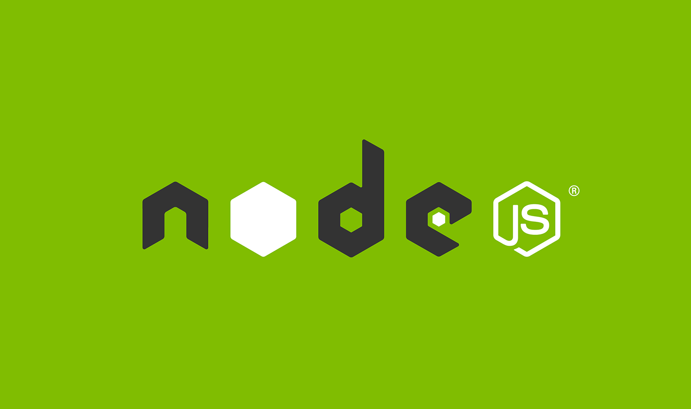

빠르게 배우는 Node.js와 NPM 설치부터 개념잡기

node.js와 npm은 웹 개발에 종사하고 있는 개발자라면 웬만해서는 알만큼 중요한 기술 중의 하나이다. 많이 들어보기도 했을 것이다. 이와 관련된 포스팅도 많고 정보도 많으니까. 그럼 node.js와 npm이 무엇인지 알아보고 설치를 진행해 보자.
Node.js와 NPM 개념잡기
Node.js 공식 사이트에서는 이렇게 정의하고있다.
node.js와 npm이 무엇인지 대강 알겠다.node.js는 JavaScript 기반으로 구성된 서버 사이드 서비스를 JavaScript로 구현할 수 있게 만든 런타임이고, npm은 node.js 기반의 모듈을 모아둔 집합 저장소이다. npm은 Node Package Manager 또는 Node Package Modules라고도 한다.
node.js를 구글 트렌드에서 검색하게 되면 계속되는 상승곡선을 볼 수 있다.
그리고 전 세계에서 사용 중인 것을 확인할 수 있다.
그만큼 오늘날 node.js는 개발에 있어서 중요한 한 부분을 차지하고 있다는 것이다. 그럼 node.js를 사용해서 우린 무엇을 할 수 있을까?
다음은 node.js로 할 수 있는 것들이다. 꼭 여기에 국한되지는 않지만 node.js가 가장 빛을 발하는 곳은 실시간 웹 애플리케이션이다. 이유는 About Node.js node.js 정보에 잘 나와 있다. 설명하자면 node.js는 lock이 없으므로 프로세스를 dead-locking 할 걱정이 없고 I/O를 직접 수행하지 않으므로 프로세스가 절대 차단되지 않기 때문이다. non Block이기에 확장 가능한 시스템은 노드에서 개발하는 것이 합리적이다.
- 정적 파일 서버
- 웹 응용프로그램
- 메시징 미들웨어
- HTML5 멀티 플레이어 게임용 서버
npm은 훌륭한 개발자들이 Node.js 기반의 JavaScript로 개발된 오픈 소스를 모듈로 올려놓은 곳이다. 우리는 웹 개발에 필요한 jQuery, gulp, webpack 등의 모듈들을 npm명령어를 통해 쉽게 다운받고 쓸 수가 있다.
Node.js와 NPM 설치하기
node.js와 npm 설치는 간단하다. npm의 경우는 Node Package Manager이기 때문에 node.js를 설치하면 같이 설치된다. 먼저 Node.js에서 안정적인 V6.x.x를 다운받은 후 원클리으로 설치하면 된다.
설치가 완료되었다면 확인해보자. 명령 프롬프트를 실행하여 아래 명령어를 쳐보자.
1 | $ node -v |
정상적으로 다운로드 받고 설치한 버전 정보가 출력된다면 설치는 완료된 것이다. 물론 npm도 설치가 되었겠지만 그래도 확인은 해보자.
1 | $ npm -v |
이것으로 설치는 완료되었다. 별도의 Path도 잡을 필요 없고 원클릭으로 node.js와 npm을 설치할 수 있다.
Node.js 테스트해보기
node.js를 설치하였으니 한번 실행해보자. 명령 프롬프트를 열어 node명령어를 실행하자.
1 | $ node |
이제 우리는 명령 프롬프트에 JavaScript 코드를 입력하여 실행할 수 있다. 아래 코드를 Enter와 함께 입력해보자.
1 | var a = 1; //enter |
명령 프롬프트에서 이렇게 JavaScript 코드를 입력할 수도 있지만 이렇게 개발할 수는 없다. JavaScript 파일을 만들고 해당 파일을 실행해보자. 먼저 정당한 곳에 NodeTest폴더 하나를 만들고 그 폴더 안에 main.js파일을 만들자.
1 | //mian.js |
main.js파일을 만들었으면 NodeTest경로로 이동하자. 명령 프롬프트로 이동해도 되고 아니면 NodeTest폴더에서 Shift + 마우스 우클릭을 통해 여기서 명령 창 열기를 통해 명령 프롬프트를 실행할 수 있다.
어쨌든 명령 창을 실행하였으면 main.js를 실행하자.
1 | $ node main.js |
결과를 확인하였는가? 이처럼 미리 생성된 JavaScript 파일을 우리는 node명령어를 통해 실행할 수가 있다.
NPM 테스트해보기.
이제 npm을 테스트해보자. npm을 통해 특정 모듈을 다운받고 그 모듈을 통해 어떤 작업을 수행할 것이다. 먼저 NodeTest폴더로 이동하여 명령 프롬프트를 실행 후 명령어를 입력하자.
1 | $ npm init -y |
npm init명령어를 입력하면 package.json파일이 생성된 것을 볼 수 있다. 진행하기에 앞서 먼저 package.json을 보고 가자.
Package.json
우리가 만든 package.json을 열어보자.
1 | { |
뭔가 보니까 감이 오는가?package.json은 프로젝트에 대한 명세라고 할 수 있다. 해당 프로젝트의 이름, 버전, 사용되는 모듈 등의 스펙이 정해져 있으며, 이 package.json을 통해 모듈 의존성 모듈 관리도 진행할 수 있다. 만약 어떤 오픈 소스를 다운 받을 때 이 package.json만 있다면 해당 오픈 소스가 의존하고 있는 모듈이 어떤 것인지. 그리고 그 모듈들을 아래 명령어로 한 번에 설치할 수 있다.
1 | $ npm install |
이어서 가자.
여기까지 해서 package.json이 생성되었으니 npm을 통해 모듈을 설치해보자. 모듈은 mocha라는 Front-End 단위 테스트(TDD) 프레임워크를 설치해보겠다. mocha와 관련된 포스트는 JavaScript 단위 테스트 프레임워크 - Mocha를 참고하도록하자.
1 | $ npm install mocha --save-dev |
해당 명령어를 통해 mocha를 설치해만 NodeTest폴더 안에는 node_modules폴더가 생성되고 그 안에는 mocha모듈이 설치된 것을 확인할 수 있다. 그리고 다시 package.json을 열어보면 devDependencies에 mocha가 추가된 것을 볼 수 있다. 이는 mocha를 설치할 때 --save-dev옵션을 추었기에 추가가 된 것이다.
1 | ... |
이렇게 설치한 npm모듈은 해당 프로젝트에서 사용할 수 있는 흔히 말하는 지역변수와 같은 개념이 되는 것이다. 그럼 지역변수가 있으니 전역으로 사용할 수 있는 모듈도 있지 않을까?
1 | $ npm install mocha -g |
전역으로 설치하기 위해서는 -g옵션을 추가해주면 된다. 이렇게 전역으로 설치된 모듈은 C:\Users\사용자명\AppData\Roaming\npm경로에 설치가 된다. (폴더가 없다면 숨김포더를 해제하라.) 이렇게 전역으로 설치한 모듈을 해당 프로젝트에서 심볼릭 링크로도 사용이 가능하다.
1 | $ npm link mocha |
npm을 통해 설치된 모듈의 목록 역시 확인할 수 있다. 아래 명령어를 하나씩 입력해보자.
1 | $ npm list |
자세한 npm명령어 또는 옵션은 NPM DOCUMENT를 참고하자.
node.js와 npm으로 인해 개발은 더욱 편리해지고 있다. 또한 나로써는 node.js가 JavaScript 기반이라는 것이 너무나 좋다. JavaScript를 알고 있으니까.. 오래전에 JavaScript로 서버를 구축한다는 생각이나 했었을까.. 페이스북에서는 VR 개발용 JavasScript 프레임워크도 공개하기도 하였다. JavaScript의 범용성은 어디까지 일까.